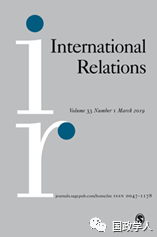
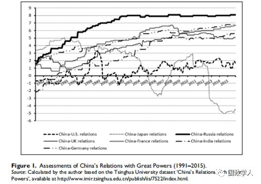
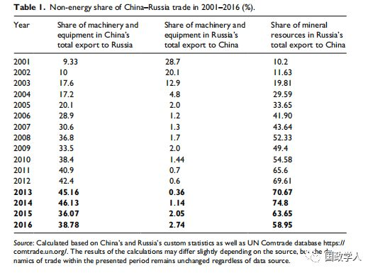

收录于合集

简 介
【作者】 Alexander Korolev 博士是新南威尔士大学人文社科学院政治和国际关系讲师。他通晓俄语、英语与汉语三门语言，并曾长期在中国与俄罗斯国内学习或进行学术研究，其研究方向为国际关系理论和比较政治学，特别关注中俄关系、强权政治、以及中俄美三边关系。 Vladimir Portyakov 是俄罗斯科学院远东研究所副所长，曾在苏联驻中华人民共和国贸易代表处以及苏联/俄罗斯驻华大使馆供职。他主要进行关于当代中国的研究，特别关注的是中国的经济政策、中国的对外政策以及中俄关系。
【编译】 陈舜波
【校对】 刘瑛琛
【审核】 杨艺华
【来源】 Korolev,A., & Portyakov, V. (2019). Reluctant allies: system-unit dynamics andChina-Russia relations. International Relations, 33(1), 40–66.
【期刊】 《国际关系》（InternationalRelations），是国际关系领域的顶尖期刊之一，由SAGE出版社与大卫·戴维斯纪念研究所(David DaviesMemorial Institute)联合出版编辑。其2017年影响力因子为1.172，在“国际关系”类别的85种期刊中排名第43位。

** 不得已的伙伴：系统 -单元动态与中俄关系**
Reluctant allies: system-unit dynamics and China-Russiarelations
Alexander Korolev
Vladimir Portyakov
内容提要
本文试图以中俄关系为实证对象，通过阐述国家行为形成过程中系统层面和单位层面因素之间的相互作用，来改进新古典现实主义的框架。
中国和俄罗斯是一个非常矛盾的组合：两国之间的战略协约在不断增长，但两国又都不愿意发展成为一个成熟稳定的政治军事联盟。本文认为，当前中俄关系由系统和单元两个不同层面的相互矛盾的力量所塑造，也因而产生了彼此相反的影响。系统层面上，美国主导的单极世界的系统压力促进了中俄关系的进一步发展；但是，在单位层面上，不同的国内经济模式与消极的历史记忆这两个主要障碍使中俄关系复杂化，阻碍了两国之间正式联盟的形成。尽管如此，为应对不断增长的系统性压力，中俄两国政府已经开始努力弱化单元层面障碍的影响，使得目前中俄关系呈现上升趋势。
因此，新古典现实主义框架可以被理解并进一步发展为一种动态互动模型。在这一模型中，单元环境被系统塑造，同时也在缓和着系统的影响，这一双向互动的过程主要通过外交政策体现出来。
文章导读
**1
** ** ******中俄关系的“两重谜题”
苏联解体以来，中俄关系不断发展，在当前中美和俄美关系恶化的背景下，中俄双方却进一步加强了共同承诺和双边合作。现阶段，中俄逐渐发展成为 “全面战略协作伙伴关系”（译者注：目前已升级成新时代全面战略协作伙伴关系），两国还逐步在重要的国际机构中形成“联合阵线”。在清华大学国际关系研究院发布的《中国与大国关系数据库》中，相比于中国同其他大国的关系，中俄战略关系是最好的。

但是，两国的双边合作进展都伴有免责声明，因此 中俄两国目前尚未形成也不将形成正式的联盟。 中俄关系的这种复杂性与矛盾性在一些具体案例中体现得淋漓尽致，例如，在乌克兰危机和南海争端中，中俄两国都采取了不支持也不反对的立场。
**2
**
系统 — 单元动态与分析框架
在这一部分，作者基于新现实主义理论否定了“单位旋转模型（unit-level rotation model）”，“外生条件模型（exogenous conditions model）”和“操纵模型（manipulation model）”这三大模型对中俄关系的解释。
同时，作者提出了一个名为 “ 国家机构中心化（ state agency-centered model ） ” 的新模型 ，并以中俄关系为例来进一步阐述。该模型强调的是国家领导人的作用，他们积极修正单位层面的障碍，以便在系统性压力不断增长的情况下下促进外部平衡。
**3
**
国际结构的收缩与系统性压力的增长
作者衡量系统压力有两种办法。第一种是看国际体系内的权力分配情况以及结盟后是否能达到权力均衡。理论依据是权力均衡理论认为，当国际体系内存在一个强国时，其他国家就会担心自己的安全并通过相互结盟来促使体系达成权力均衡，前提是强国没有强到结盟也无法达到。所以，作者将现在的中俄和冷战时中苏的GNP和军费开支进行比较，认为现在的国际物质权力结构和冷战类似，所以中俄具备结盟的条件。第二种是看大国的行为和彼此互动的性质。理论依据是地区安全复合体理论，即看国际体系中是否存在地区安全复合体，在其中，挑战者采取了更加自信的外交政策，引起了霸权国的一系列反映。并且，如果地区外大国与地区安全复合体内的小国进行军事合作甚至以小国为跳板来攻击地区安全复合体内的主要大国，系统压力也会上升。所以，作者分析了中俄分别涉及的两个地区安全复合体，即东欧、中国南海，最后认为中俄也具备结盟的条件。美、俄两国战略平衡逐渐明朗，美国在其中依旧占据主导地位，中俄两国不断加强双边安全合作。
**4
**
系统性压力增长背景下的单元层面变量
在必要的时候，为了共同应对系统层面的压力，中俄两国能够找到出路克服双边关系与地区交往中现存的分歧。因此，作者关注的是当系统性压力显著增长且保持在中高范围内时单位层面障碍的发展变化，而非外部威胁迫在眉睫的情况下阻碍联盟形成的因素。
1. 经济模式的不同与新倡议
根据比较优势理论，中俄两国经济模式的差异（俄罗斯是主要的供给者，而中国为自然资源的主要消费者）本应将中俄经济上的互补转化为彼此间更为紧密的联盟。然而， 现实中，中俄之间的分工产生了严重的贸易失衡，使两国在各自经济利益上处于对立面，并对其他领域的互动产生了消极影响
首先，中俄能源贸易中不断出现价格分歧，产生了过多的讨价还价和双方不断积累的不满，影响了双方的合作。其次，过去20年里，两国不同的经济增长模式造成了 中俄双边贸易结构的极度不平衡（详见表 1 ）。 在中国成长为“世界工厂”的同时，俄罗斯则由工业制造国沦为能源出口国，并在对外贸易（特别是石油贸易方面）严重依赖中国市场。俄罗斯公众呼吁保护国内市场，并担忧俄罗斯变成中国的附庸。最后，经济上的这种局面也造成了严重的地缘政治和区域影响。在俄罗斯对远东及西伯利亚的开发中，两国现有的关系模式既无法实现富有成效的合作，甚至还会给俄罗斯东部的领土带来危险。

许多专家认为， 解决此类问题关键在于改变中俄经济关系的格局，并通过发展和实现制造业多样化来实现俄罗斯的再工业化 。当前中俄两国已经在朝着这一方向努力，特别是俄罗斯提出的远东开发战略以及中国提出的“一带一路”倡议为两国的合作提供了新机遇。中俄两国之间的非能源经济合作正在迅速发展（参考表1），双方所做的这些尝试使中俄经济关系格局更加平衡，并为两国之间形成更为稳固的战略合作伙伴关系开启了大门。
2. 消极的历史记忆和重建互信
中国和俄罗斯对双边关系中一些重要历史事件（如一系列涉及领土的双边条约的签订、苏中关系等）的解释存在多重 “ 负面 ” 差异。 这些“历史重负”成为两国集体意识和记忆的一部分，由此产生的严重不信任感阻碍了两国进一步的和解与两国关系的发展。同时，双方又都不愿从根本上重新考虑对上述历史遗留问题的立场。
摆脱这种局面的一个办法是，在一个远比引起分歧的问题重要得多的事件上构建历史共识。因此，中俄重构了两国在第二次世界大战中的共同历史，并使之成为双边关系的核心主题之一。可以预期，中俄两国对二战的共同记忆是一项足够积极的历史遗产，能够掩盖两国双边历史中不愉快的记忆，并有利于两国建立互信。
**5
** 结 论
**
**
这项研究解释了当前中俄关系的矛盾模式，并通过研究经验案例与建立新的分析模型来阐明新古典现实主义理论中系统层面和单元层面变量之间的动态关系。
中俄两国关系的日益密切，是系统性压力增长与两国自身导致的。两国不愿建立正式的联盟关系，则可以通过不同的国内经济模式与消极的历史记忆两个单元层面变量来解释。而当系统结构更有利于建立联盟时，两国政府及领导人将采取措施消除单元层面的障碍。同时，本文的发现还突出了新古典现实主义路径的动态特征，以及国家领导人在这种动态变化中的关键作用。
从中期来看，俄罗斯与中国之间进一步和解的趋势可能会保持稳定。未来中国和俄罗斯的相互依赖可能会加强，合作也会更加全面。
_ ** _ 本文由国政学人微信平台独家编译首发**
更多阅读
【重磅速递】约瑟夫·奈：美国霸权的兴衰：从威尔逊到特朗普 | 国政学人
【重磅推荐】巴里·布赞：英国学派视角下的中国崛起 | 国政学人
【重磅速递】米尔斯海默：注定失败：自由主义国际秩序的兴衰 | 国政学人
【国际组织】IO杂志：联合国维和行动的武力运用问题研究 | 国政学人
【国际秩序】为什么自由主义国际秩序理念将美国外交政策引入歧途？| 国政学人
【关系理论】“关系”：世界政治关系理论的中国话语 | 国政学人
【百年国关】历史在国际社会中的应用：从巴黎和会到现在 | 国政学人
【英国学派】张勇进：中国与全球国际社会中的自由主义等级制：实力与对规范变迁的协商 | 国政学人